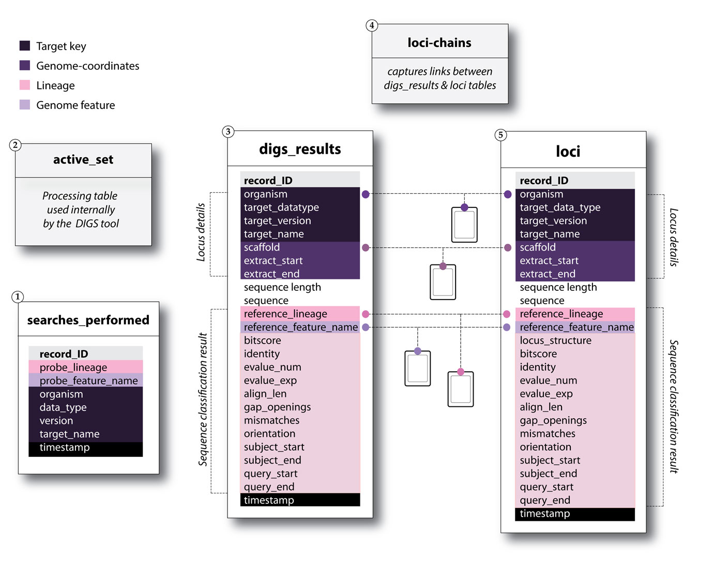

DIGS project database schema
The DIGS project database schema consists of five tables. Of these, only three core tables are relevant to the typical DIGS user, the remaining two (indicated in grey) are used internally by the DIGS tool and can be ignored under ordinary circumstances.

Screening entails performing multiple similarity searches, each involving a different probe-target pair. The ’searches performed’ table is used to keep track of progress in screening.
The ‘digs_results’ table contains a non-redundant set of all hits obtained in the screen.
The DIGS tool can be used to execute a ‘consolidation’ process that generates a ‘loci’ table that comprises non-overlapping sets of contiguous matches from the ‘digs_results’ table, based on predefined rules.
DIGS screening databases can be extended with additional tables linked to the core schema via specific fields. This allows SQL queries to draw on a potentially unlimited range of linked ‘ side-data ’.
Field definitions
Searches_performed table
| Field name | Field type | Description |
|---|---|---|
| probe_lineage | VARCHAR | Name of the lineage the probe derives from |
| probe_feature_name | VARCHAR | Name of the genome feature the probe represents |
| organism | VARCHAR | Name of the organism represented by the target database (Latin binomial recommended) |
| target_data_type | VARCHAR | Target data type (e.g. wgs, transcriptome) |
| target_version | VARCHAR | Name/ID of the genome assembly version |
| target_name | VARCHAR | Name of the target data file |
Digs_results & loci tables fields
| Name | Type | Description |
|---|---|---|
| organism | VARCHAR | Organism name (Latin binomial recommended) |
| target_data_type | VARCHAR | Target data type (e.g. WGS, transcriptome) |
| target_version | VARCHAR | Genome build version details |
| target_name | VARCHAR | Name of the target file |
| scaffold | VARCHAR | Name/ID of the scaffold in which the hit(s) were identified |
| extract_start | INT | 5’ (start) position of BLAST hit within the scaffold |
| extract_end | INT | 3’ (end) position of BLAST hit within the scaffold |
| orientation | VARCHAR | Orientation of the BLAST hit within the scaffold |
| sequence_length | INT | Length of the BLAST hit alignment |
| sequence | TEXT | DNA sequence of the hit |
| reference_lineage | VARCHAR | Name of the lineage the probe derives from |
| reference_feature_name | VARCHAR | Name of the genome feature the probe represents |
| query_start | INT | 5’ (start) position of BLAST hit within the scaffold |
| query_end | INT | 3’ (start) position of BLAST hit within the scaffold |
| bitscore | INT | Bitscore of the best match to the hit in the reference library |
| identity | VARCHAR | Percentage identity of hit to closest matching reference sequence |
| evalue_num | INT | BLAST 'expect' value numerator |
| evalue_exp | INT | BLAST 'expect' value exponent |
| align_len | INT | Length of alignment between hit and best-matching reference sequence |
| gap_openings | INT | Number of gaps in alignment between hit and best-matching reference sequence |
| subject_start | INT | 5’ (start) position of alignment (reference) |
| subject_end | INT | 3’ (end) position of alignment (reference) |
| query_start | INT | 5’ (start) position of alignment (extracted hit) |
| query_end | INT | 3’ (end) position of alignment (extracted hit) |
| locus_structure (loci table only) |
VARCHAR | Captures the order of contiguous hits from digs_results table that were merged (if multiple hits were merged) to create table row. |